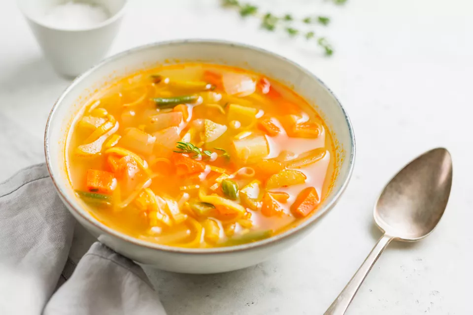

Soup

Soup season is here! There’s a lot to love about fall – beautiful weather, changing leaves, cozy baked goods, and hot drinks – but the soup recipes are hands down my favorite part. I adore soup. I love making it, I love eating it, and I love packing up the leftovers so that I can enjoy it again the next day. When I’m stressed, I turn to soup because I find it meditative to cook.
To celebrate the start of soup season, I’m sharing my best tips for making soup recipes, as well as over 30 of my favorite soups. In addition to classics like French Onion and Butternut Squash Soup, you’ll find a host of inventive, veggie-forward soup recipes like Golden Turmeric Noodle Miso Soup and Tomatillo Zucchini White Bean Chili. I love them all, and I hope that you dog
Ingredients
- 2 tablespoon butter
- 1 onion
- salt to taste
- 4 cups chicken broth
- 1 cup water
- 1 teaspoon seasoning
- 1 pinch cayenne pepper
- 2 tablespoon white sugar
- 12 noodles
Steps
- Melt butter in a soup pot over medium heat. Add minced onion and salt; cook and stir until onion is soft and golden, about 10 minutes.
- Pour chicken broth and water into pot. Bring to a boil, reduce heat to medium, and simmer 15 minutes.
- Place asparagus pieces in simmering broth. Cook, stirring occasionally until asparagus is just tender and still bright green, 5 to 10 minutes. Remove from heat.
- Use an immersion blender to blend soup until smooth, about 3 minutes.
- For a finer texture, strain soup through mesh strainer. Return strained soup to pot and place on stove.
- Ladle soup into bowls. Drizzle a spoonful of Parmigiano-Reggiano-lemon cream on top of each serving and swirl to form a random design.
Return to main page